[上一章]
1、程序分析
在正式开发之前，首先需要对程序进行简单的分析。只有合理的分析程序界面以及要实现的功能之外，才能更好的开发这个软件。
如下：
运行平台： win7及以上系统。
素材准备：
需要准备以下图片素材：
背景图、操作飞机、敌机、子弹、爆炸效果。
需要准备以下声音素材：
子弹发射声、爆炸声。
这些素材可以自行在网上搜寻，或直接使用文章结尾飞机大战源码中提供的素材。
游戏流程：
进入游戏后，首先显示一个名称为“开始游戏”的按钮，点击按钮后隐藏鼠标后开始游戏。
背景图绘制：
背景图绘制时可以实时移动图片，实现简易的动画效果，让游戏的整体效果可以好看一些。
操作飞机绘制：
操作飞机在绘制时，让其跟随鼠标位置进行移动，实现控制操作飞机的目的，同时需要检测操作飞机是否与敌机发生碰撞，从而结束游戏。
敌机绘制：
随机位置绘制敌机并实时移动其位置，实现敌机飞行效果。
子弹绘制：
当处于游戏状态时，点击鼠标左键开始绘制子弹，同时播放子弹发射声音，并实时移动其位置检测是否与敌机发生碰撞，如果发生碰撞就开始绘制爆炸效果并删除敌机，同时需要播放爆炸声音。
当敌机被销毁后，在游戏的左上角绘制敌机销毁数量。
2、程序开发
2.1 项目创建
利用快捷键“Ctrl + Shift + N”打开项目创建窗口，根据需求选择一个视窗平台下具有窗口的项目模板。
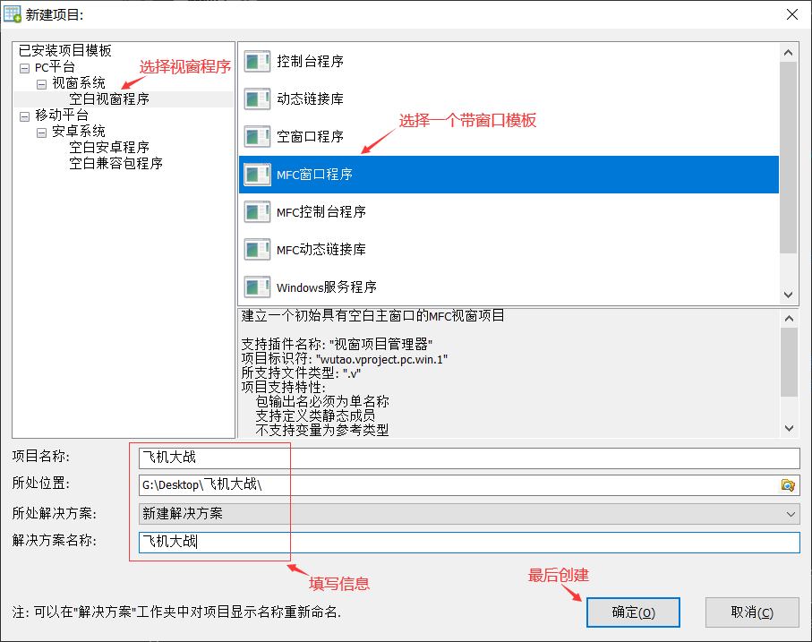
项目创建完毕：
在项目创建完毕后，修改窗口标题包名等基本信息，随后将准备好的图片和声音资源复制到项目目录中，以便于管理。
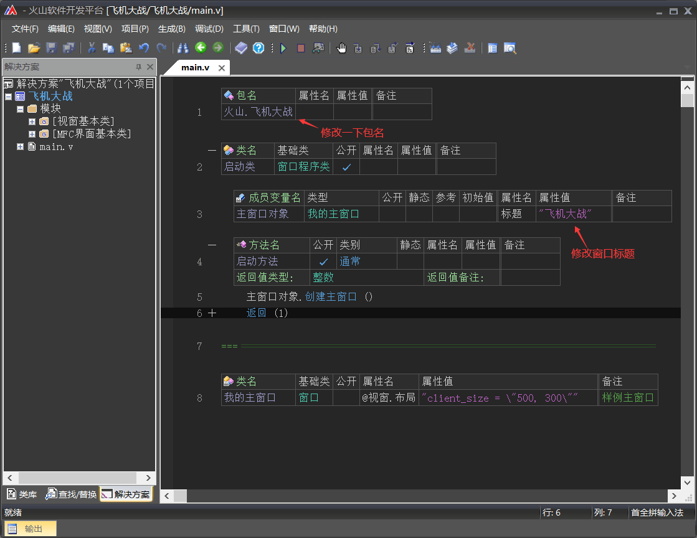
2.2 界面设计
使用快捷键“Ctrl + U”打开主窗口的界面设计器，进行界面设计后才能开始编写游戏代码。
需要用到以下组件：两个画板和一个按钮，按钮用于控制游戏的开始，两个画板是为了防止游戏绘制时产生的闪屏现象。
(1) 首先将窗口尺寸设置为宽度400、高度640。
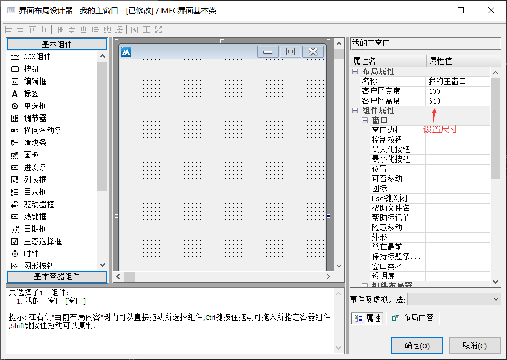
(2) 在窗口上拖放一个画板组件，并设置其尺寸和位置起名“备用画板”，所有的绘制操作均在此画板上进行。
注：其尺寸必须和窗口尺寸保持一致，左边属性值应设置为窗口宽度。
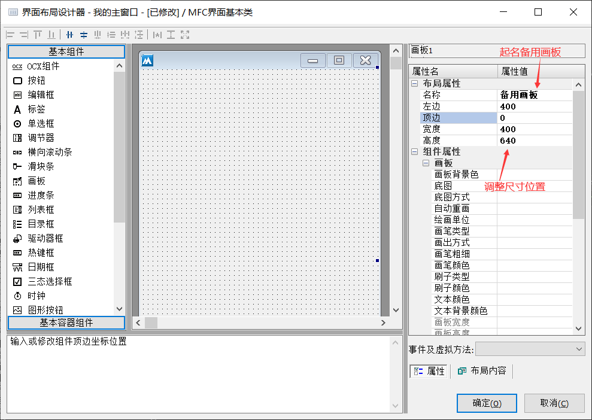
(3) 重新拖放一个画板组件，并设置其尺寸和位置，起名“主画板”。
本画板用于备用画板绘制游戏完毕后，最终其内容全部绘制到此画板上显示游戏界面，以规避快速绘制时画板产生的闪烁问题。
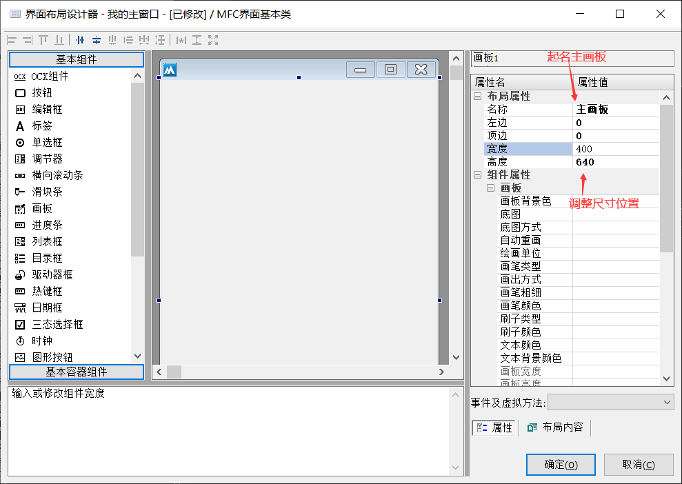
(4) 最后拖放一个按钮到窗口上，默认按钮会位于最底层，可通过快捷键“Ctrl + T”调整到顶层。
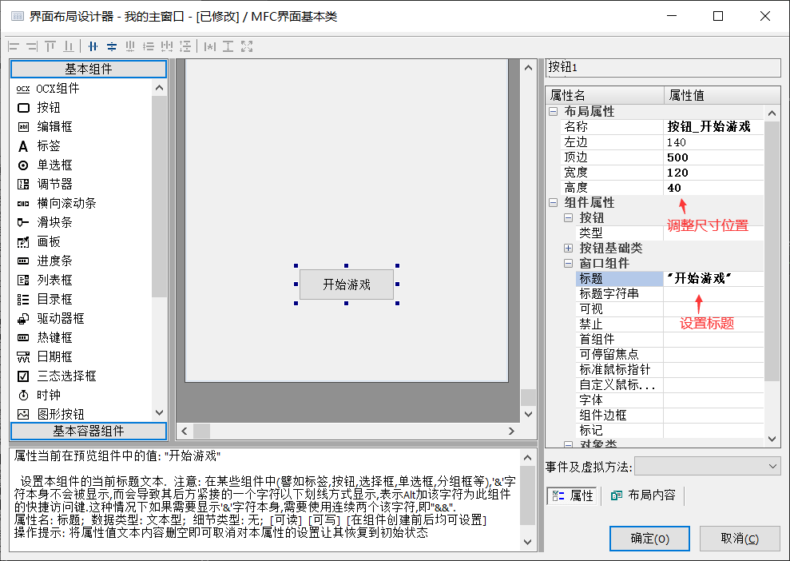
2.3 代码编写
1、 首先将两个画板增加“自动重画”属性，并设置属性值为真，如果不进行设置，画板可能会发生黑屏现象。
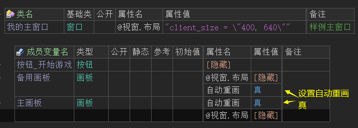
2、 使用快捷键“Ctrl+D”新增一个类(名称随意)，此类用于存放准备的素材，便于后期管理。
(1) 因素材都是固定不变的，定义成员常量来存放素材即可。
(2) 声音文件必须为wav格式，类型使用“WAV资源”即可。
(3) 图片文件使用“位图资源”类型，支持主流的图片格式。
注：最后将所有常量公开，便于在程序代码中访问这些资源。
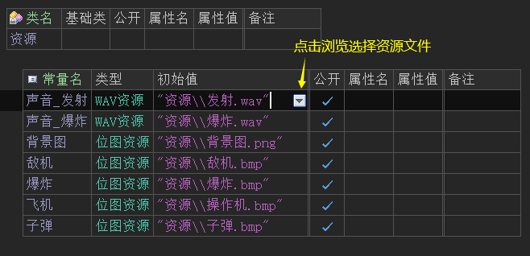
3、 使用快捷键“Ctrl+D”新增一个类，设置成如下图效果，其中：
对象数组模板类：可以将“@模板实现类”对应的属性值中填写的类，变成对象数组。
位置类：可用于存放坐标。
最终位置类将变成位置类数组，其中的每个成员都是位置类对象。
注：本类的作用，用于存放敌机坐标和操作飞机发射的子弹坐标。
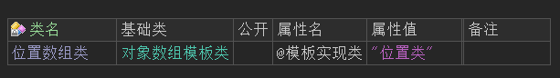
4、 在“我的主窗口”中，新增一个方法，用于取出鼠标相对于主画板左上角的位置。
(1) 首先利用“取鼠标位置()”方法取出鼠标相对于屏幕左上角所处的位置。
(2) 然后利用“主画板.用户区位置到屏幕()”方法取出画板组件相对于屏幕坐标。
(3) 最后将鼠标位置减去组件位置，得到的就是鼠标位置在画板组件中的位置。
注：本方法主要用于操作飞机发射子弹时，计算坐标使用。
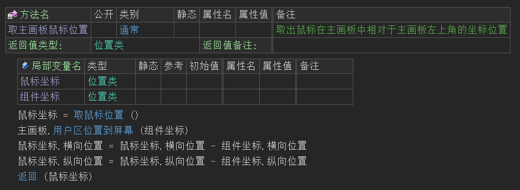
5、 首先定义一个类型为“位置类”的成员变量，用于实时存储鼠标在画板中的位置，以便于控制操作飞机。
添加画板组件的“鼠标位置被移动”事件，判断来源对象是否为主画板，如果为主画板则将坐标位置存储到鼠标位置对象中。
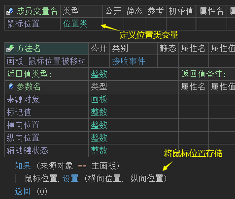
6、 首先定义一个逻辑型的成员变量，用于控制游戏是否开始。
(1) 添加按钮被单击事件，因整个游戏窗口中只有一个按钮，可以不用判断来源对象是否为开始游戏按钮。
(2) 在事件中首先将鼠标隐藏。
(3) 设置“是否开始游戏”的逻辑变量为真。
(4) 隐藏开始游戏按钮组件。
(5) 最后调用开始游戏()方法进入游戏。
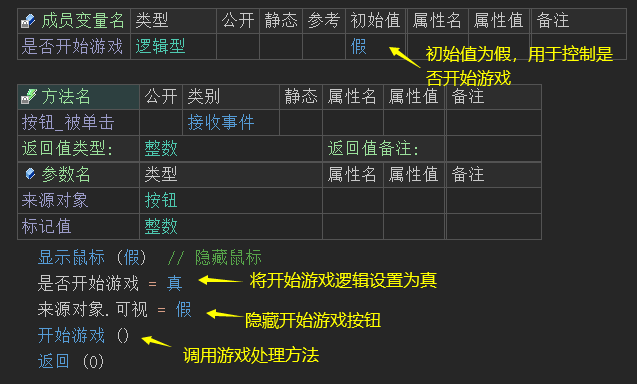
7、 使用快捷键“Ctrl+M”新建一个开始游戏方法，并在方法内将所有位图资源全部转换成位图对象类，以便于后续的绘制操作。
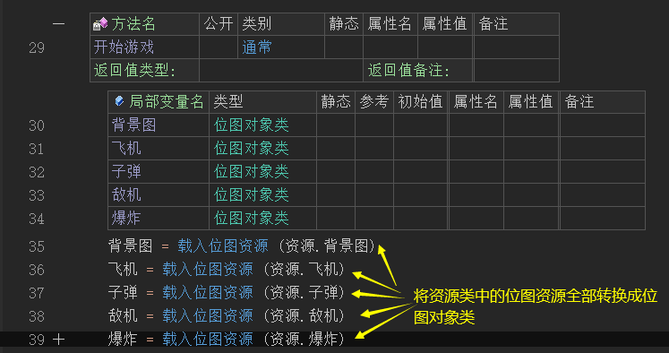
8、绘制背景图
8.1 在判断循环子语句体内绘制背景图
(1) 首先在判断循环外定义一个局部变量，用于存储背景图顶边位置，通过改变此变量值可以实现背景图移动动画。
(2) 利用判断循环语句判断“是否开始游戏”成员变量是否为真，如果为真则开始游戏绘制。
(3) 调用备用画板的画图片方法，绘制两个处于不同位置的背景图，以便于动画效果的实现。
(4) 将背景图顶边位置进行循环累加10像素距离，以实现背景图移动效果，移动的距离，不建议太大，如果移动距离太大动画效果会不流畅。
(5) 最后判断顶边距离是否即将超出屏幕画板尺寸，如果即将超出就将背景图顶边位置设置为0，从而实现循环播放动画。
画图片()方法解析：
本方法共有6个参数。
参数1：提供要绘制的位图对象；
参数2：提供左边画出位置；
参数3：提供右边画出位置；
参数4：提供要画出的宽度；
参数5：提供要画出的高度；
参数6：提供画出方法，可使用“图像复制方法”中的常量值，本参数也可以为一个颜色值，用作指定图片中的透明色(即具有此颜色的像素 将不会被绘制)，但必须使用其负值. 如: -取颜色 (255, 255, 255)，此参数 值即指定在画板上画出图片中除白色外的所有颜色。
当前绘制背景图时，最后一个参数无需填写。
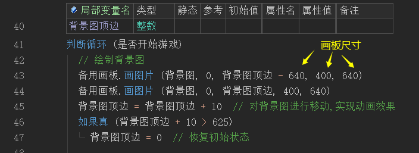
8.2 将备用画板的游戏界面显示在主画板上，因为是一次性将画好的界面全部显示在主画板上，所以可以规避画板单独绘制时产生的闪烁现象。
(1) 利用备用画板的取图片方法取出画好的位图对象。
(2) 将取出的位图对象，完整的绘制到主画板上。
(3) 最后将备用画板清除，并进行延时和处理事件操作。
注：因为我们是直接在主线程利用“判断循环”语句进行绘制的，所以必须进行延时和处理事件操作，否则整个软件界面可能会卡死。
取图片()方法解析：
本方法共有3个参数。
参数1：提供要保存的位图对象，画板图片被取出后将会保存在此参数中；
参数2：提供输出宽度；
参数3：提供输出高度；
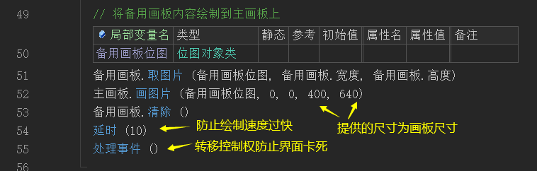
8.3 最后可以调试运行一下游戏，查看游戏背景图是否成功进行绘制。
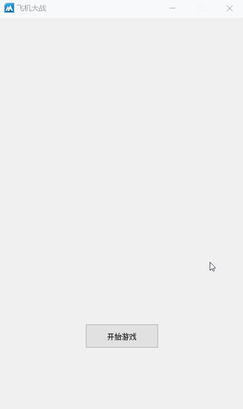
9、 绘制操作飞机
9.1 在绘制背景图之后、主画板绘制之前，调用备用画板的“画图片()”方法绘制操作飞机。
其中“鼠标位置”是来源于“画板_鼠标位置被移动”事件下提供的位置信息，根据此位置信息就可以在鼠标位置处绘制操作飞机。
最后一个参数提供的负颜色值，其作用是用于不绘制指定颜色。因提供的素材是具有白色背景，因此需要填写本参数，让其不绘制白色。
如下，画图片方法帮助页中的注释：
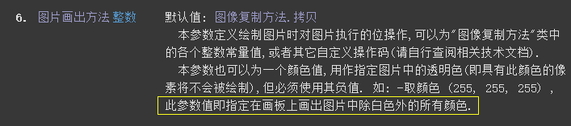
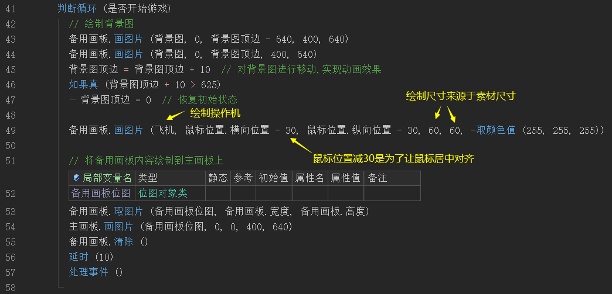
9.2 最后调试游戏，移动鼠标即可实现控制操作飞机。
为什么移动鼠标时操作飞机也会进行移动？
(1) 主画板添加了“鼠标位置被移动”事件，只要鼠标位置在本组件上发生移动，那么其坐标就会被记录在“鼠标位置”变量中。
(2) 开始游戏后，判断循环会一直循环执行，不停的从“鼠标位置”中获取最新的鼠标位置，用于绘制操作飞机，从而也就实现了移动鼠标控制操作飞机的目的。
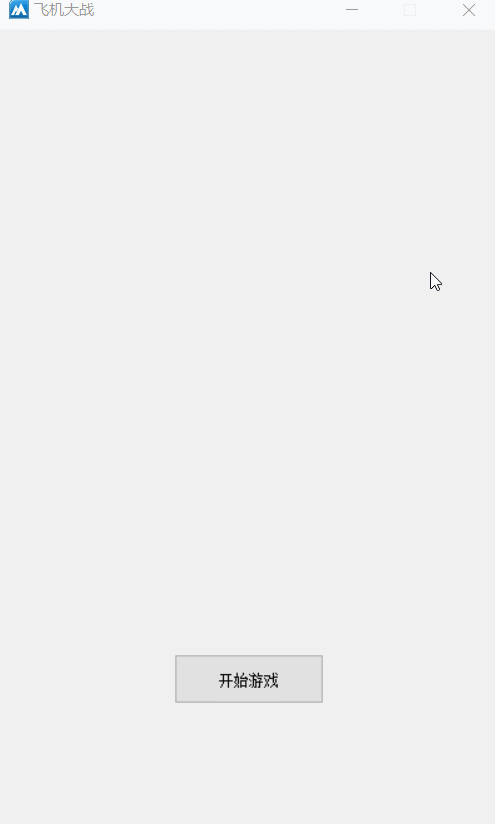
10、绘制敌机
10.1 首先定义一个类型为“位置数组类”的成员变量，用于存放敌机坐标。
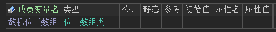
10.2 可以在绘制操作飞机下方编写绘制敌机的相关代码。
53-54行：
利用取随机数()方法，创建一个生成敌机的条件，当生成的随机数等于19时进行敌机生成（也可以是其它数字）。
为什么要进行这样的限制？
其实原因很简单，因为所有游戏绘制代码均在判断循环中执行，其执行速度是非常快的，如果不限制敌机生成条件，那么最终会生成非常多的敌机。
55-58行：
当满足生成敌机的条件后，随机一个横坐标，纵坐标固定为-50，使生成的敌机隐藏在游戏区域外，并将坐标赋值给位置对象，最后将此位置对象加入到敌机位置数组中存储起来，便于后续使用。
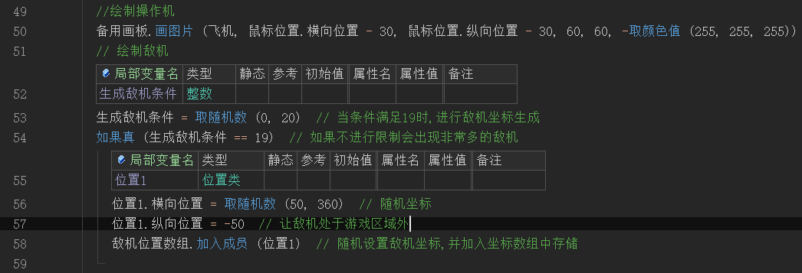
10.3 遍历敌机位置数组，开始绘制敌机
59-60行：
将所有敌机数量取出，便于对敌机进行遍历。
61行：
定义类型为整数的计数变量，用于对游戏区域内的敌机数量进行计数。
62行：
利用“计次循环”对敌机数量进行循环，其目的是循环取出所有坐标，并在指定的坐标位置绘制敌机。
63-65行：
在正式绘制敌机之前，对计数进行累积+1的操作，并判断其数量是否大于敌机位置数组数量，如果超出范围就跳出循环，防止游戏出错。
66行：
取出位置数组所有成员的坐标，并在此坐标位置进行绘制敌机。
67行：
绘制的同时移动敌机纵向位置坐标，实现敌机飞行效果。
68-71行：
首先判断敌机位置是否超出显示范围，如果满足条件则在敌机位置数组中删除敌机，并将计数进行-1，防止因敌机数量问题导致程序错误。
循环结束后，将计数赋值为0，以便于下次使用。
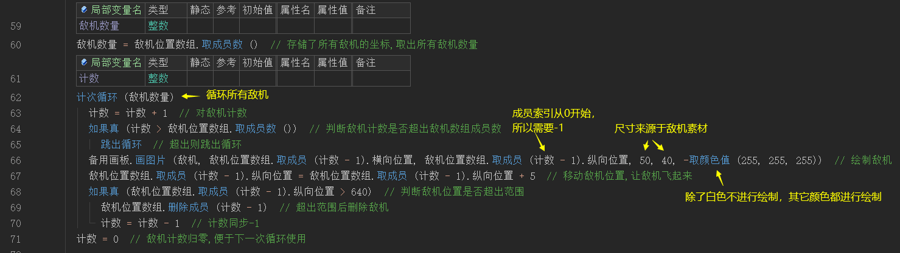
10.4 调试游戏，最终可看到敌机被成功绘制。
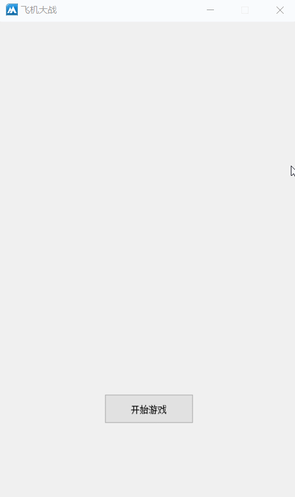
11、 绘制子弹
11.1
(1) 首先定义一个位置数组对象，用于存放子弹位置。
(2) 添加画板组件的鼠标左键被按下事件，判断其来源对象是否为主画板，并且是否已经开始游戏。
(3) 如果两个条件都满足，则利用“播放WAV资源()”方法播放发射声音。
(4) 取出主画板鼠标位置，并偏移一些像素，使子弹能够从操作飞机的机头位置发射。
(5) 最后将此位置对象加入到子弹位置数组对象中存储起来。
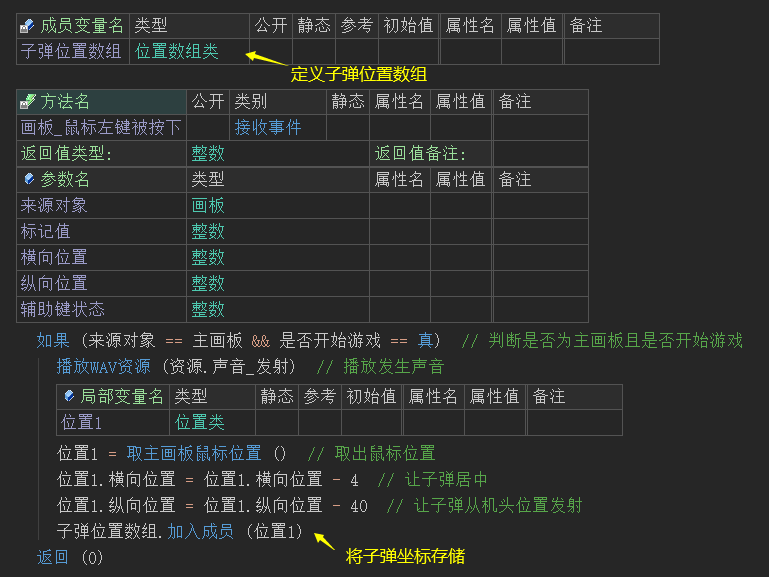
11.2 在敌机计数归0后，开始编写子弹绘制代码。
72-74行：
从子弹位置数组中取出子弹数量，并利用“计次循环”语句进行循环。
75-77行：
利用计数变量对游戏区域内显示的子弹进行计数，并判断其数量是否超过所有子弹数量。
如果计数超过了所有子弹数量，则证明数据异常，执行跳出循环操作。
78行：
取出子弹位置数组中存储的子弹坐标，并开始绘制子弹。
79行：
对子弹的纵向位置进行偏移，使子弹拥有移动效果。
80-83行：
判断子弹位置是否超出屏幕显示区域，如果满足条件则在子弹位置数组中，删除此子弹，并将计数累积-1。
最后计次循环结束，将计数归0，以便于下次循环使用。
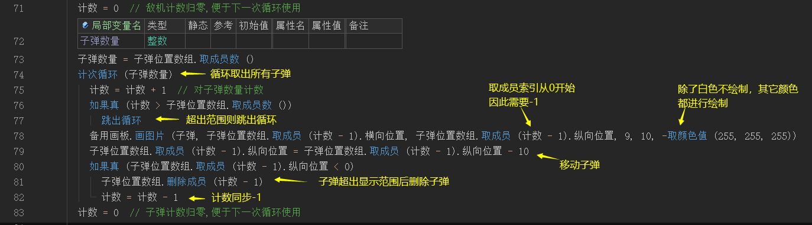
11.3 最终游戏运行后，点击鼠标左键可以进行发射子弹。
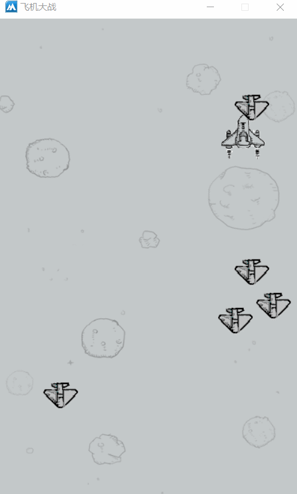
12、子弹与敌机碰撞
想要实现子弹与敌机的碰撞检测，必然需要在绘制子弹时进行操作。
因此，这段代码可以编写在子弹绘制完毕后立刻进行碰撞检测（下图黄框内）。
85行：
定义一个敌机索引的整数变量，用于对敌机进行计数，同时也可以利用本变量从敌机位置数组中取出此敌机的坐标。
86行：
利用判断循环语句，判断敌机位置数组的成员数是否大于敌机索引，如果大于则进入循环，用于循环取出所有敌机位置，并将其位置和子弹位置进行对比，从而检测子弹是否与敌机发生碰撞。
87-88行：
首先判断计数变量是否为0，如果为0则跳出循环，防止从子弹位置数组中获取子弹位置时产生错误。
89-92行：
从子弹位置数组中取出子弹坐标，从敌机位置数组中取出敌机坐标。
这里可能会产生疑问，为什么敌机索引不需要-1？这是因为敌机索引的累加是在循环末尾进行，首次循环时本变量值为0，因此不需要-1。
93行：
通过比对横向位置和纵向位置判断子弹是否已经进入敌机范围内。
首先：子弹位置.横向位置 >= 敌机位置.横向位置 && 子弹位置.横向位置 <= 敌机位置.横向位置 + 40，用于验证子弹的横向位置是否已经进入敌机的横向位置范围内，如果进入则开始判断纵向坐标是否进入。
然后：子弹位置.纵向位置 >= 敌机位置.纵向位置 && 子弹位置.纵向位置 <= 敌机位置.纵向位置 + 50，判断子弹的纵向位置是否进入敌机纵向位置范围内。
如果以上两个条件全部满足，则证明子弹和敌机发生了碰撞，然后执行如果真子语句体的内容。
94-98行：
首先播放爆炸声音，并在敌机位置绘制爆炸图片，随后删除敌机和子弹，最后执行跳出循环。
99-100行：
如果真语句结束后，对敌机索引进行累积+1。在判断循环语句结束后，对敌机索引进行归0，以便于下次循环使用。
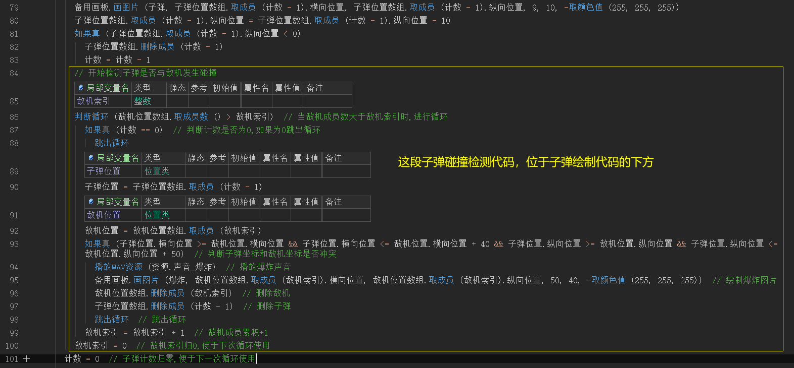
运行测试：
最终可看到当子弹和敌机发生碰撞时，敌机和子弹会同时消失。
注：因gif截图工具的问题，导致爆炸效果没有被录制上。
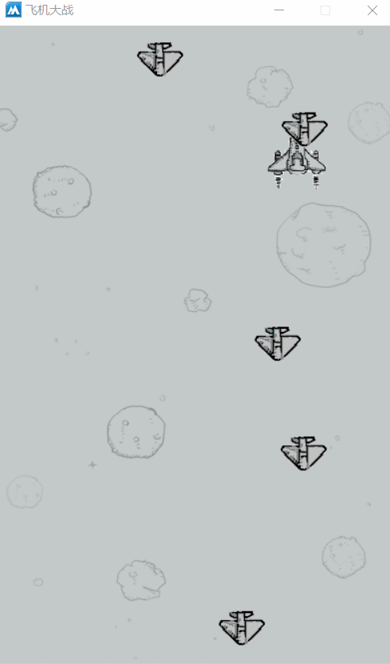
13、销毁敌机计数
(1) 想要实现计算敌机销毁数量，必然需要定义一个整数类型的成员变量，并在开始游戏之前将其重置为0。
可能会有疑问，整数变量的默认值为0，为什么还要重置为0？
这是因为在游戏过程中，当敌机销毁时此变量会发生改变，为了防止重新开始游戏时，累积上次的敌机销毁数量，因此在游戏开始之前需要重置为0。
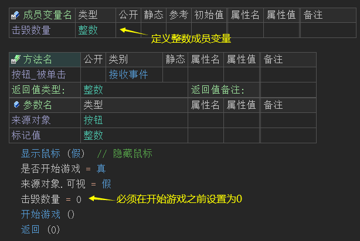
(2) 在子弹与敌机发生碰撞后，将击毁数量累积+1。
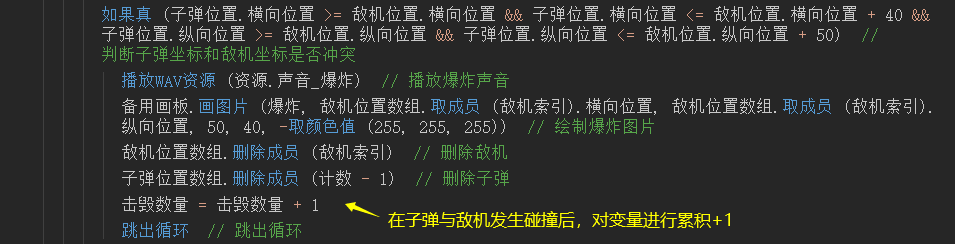
(3) 最后在主画板绘制游戏界面后，在主画板的左上角位置绘制敌机销毁数量。
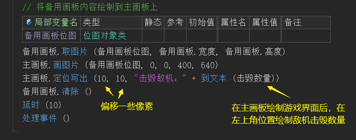
(4) 最终可看到当游戏运行后，敌机销毁时可在左上角看到敌机销毁数量。
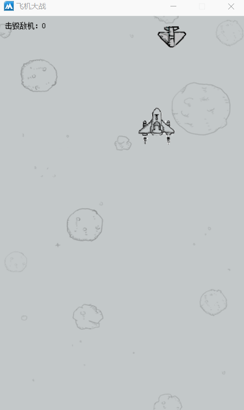
14、操作飞机与敌机碰撞
操作飞机与敌机的碰撞检测，其原理和子弹与敌机碰撞检测一致，都是通过判断其横纵坐标位置来验证是否碰撞。
碰撞检测过程可以在敌机绘制完毕后进行操作，如下图黄框中的代码。
70-71行：
首先取出敌机坐标，便于接下来的坐标判断操作。
72行：
通过比对鼠标位置(即操作飞机坐标)横向位置和纵向位置判断是否已经进入敌机范围内。
首先：鼠标位置.横向位置 >= 敌机位置.横向位置 && 鼠标位置.横向位置 <= 敌机位置.横向位置 + 40，用于验证操作飞机的横向位置是否已经进入敌机的横向位置范围内，如果进入则开始判断纵向坐标是否进入。
然后：鼠标位置.纵向位置 >= 敌机位置.纵向位置 && 鼠标位置.纵向位置 <= 敌机位置.纵向位置 + 50，判断操作飞机的纵向位置是否进入敌机纵向位置范围内。
如果以上两个条件全部满足，则证明操作飞机和敌机发生了碰撞，然后执行如果真子语句体的内容。
73-75行：
显示鼠标并弹出信息框，提示游戏结束以及被击毁的敌机数量。
76-80行：
根据按钮返回类型，如果不继续游戏则清除两个画板，并将是否开始游戏设置为假，同时将开始游戏按钮显示出来。
82行：
如果继续游戏，则隐藏鼠标。
83-86：
无论是否继续游戏，将击毁数量设置为0，并且删除所有敌机和子弹，同时跳出循环。
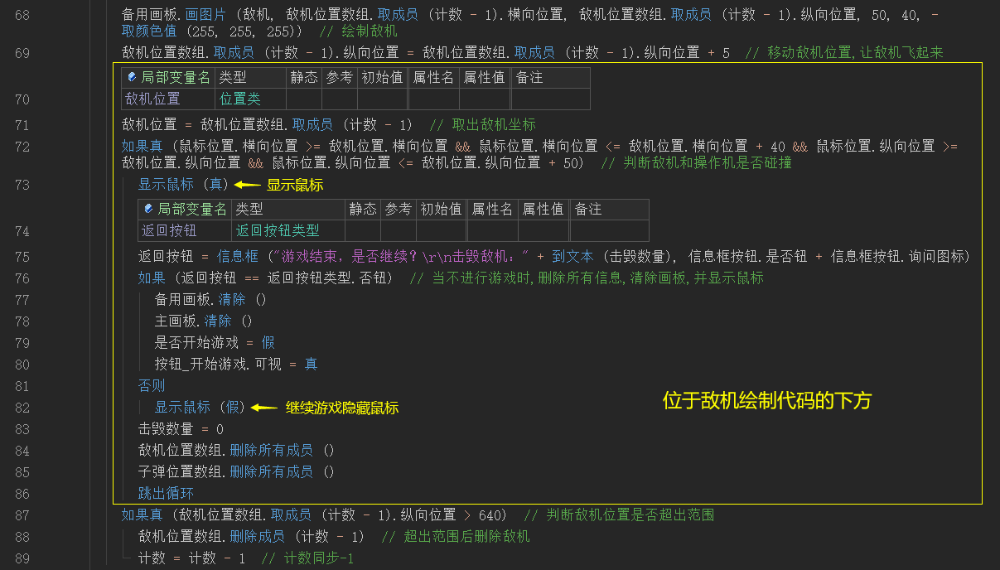
最终可以看到，当操作飞机与敌机发生碰撞后会触发游戏结束，并提示敌机销毁数量。
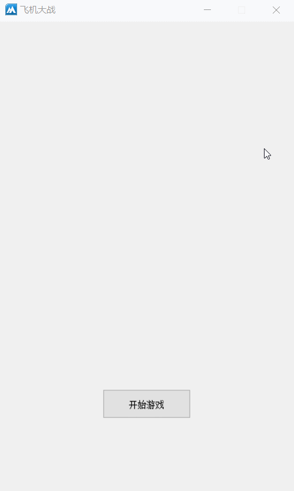
15、程序收尾
添加我的主窗口“窗口可否被关闭”事件，此事件的结果返回0表示允许关闭窗口，返回1表示不允许关闭窗口。
根据返回值特性，首先判断是否正在进行游戏，如果满足条件则显示鼠标，并弹出信息框提示用户是否结束游戏，根据用户选择的结果从而决定是接续游戏。
如果当前不处于游戏状态，则直接返回0，关闭当前窗口。
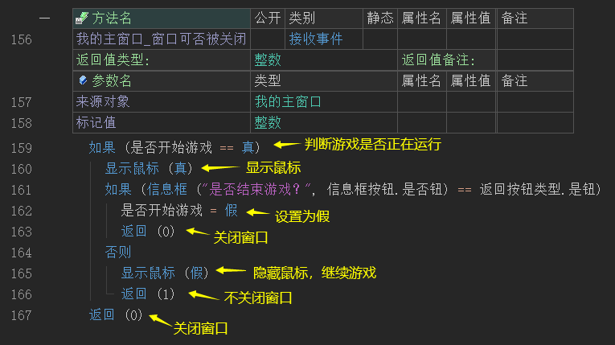
运行效果：
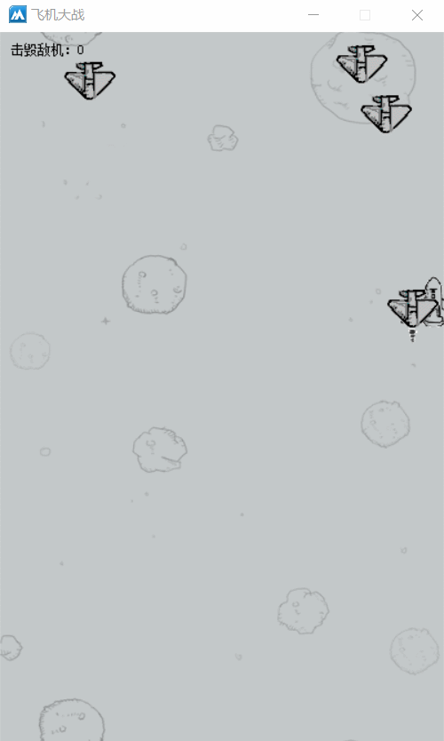
3、案例下载
点击下载当前教程案例。
[上一章]